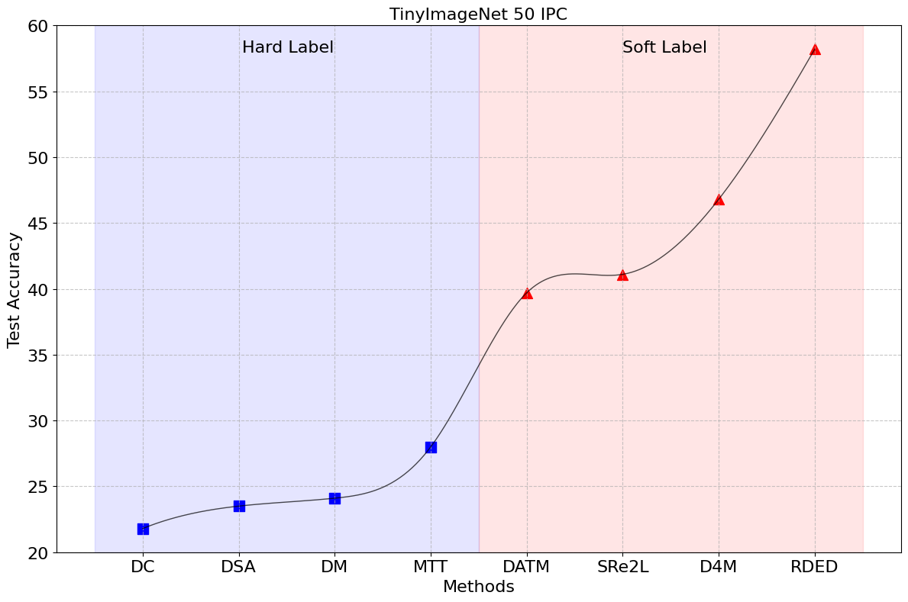

Welcome to DD-Ranking (DD, i.e., Dataset Distillation), an integrated and easy-to-use evaluation benchmark for dataset distillation! It aims to provide a fair evaluation scheme for DD methods that can decouple the impacts from knowledge distillation and data augmentation to reflect the real informativeness of the distilled data.
Motivation
Dataset Distillation (DD) aims to condense a large dataset into a much smaller one, which allows a model to achieve comparable performance after training on it. DD has gained extensive attention since it was proposed. With some foundational methods such as DC, DM, and MTT, various works have further pushed this area to a new standard with their novel designs.

Notebaly, more and more methods are transitting from "hard label" to "soft label" in dataset distillation, especially during evaluation. Hard labels are categorical, having the same format of the real dataset. Soft labels are outputs of a pre-trained teacher model. Recently, Deng et al., pointed out that "a label is worth a thousand images". They showed analytically that soft labels are exetremely useful for accuracy improvement.
However, since the essence of soft labels is knowledge distillation, we find that when applying the same evaluation method to randomly selected data, the test accuracy also improves significantly (see the figure above).
This makes us wonder: Can the test accuracy of the model trained on distilled data reflect the real informativeness of the distilled data?
Additionally, we have discoverd unfairness of using only test accuracy to demonstrate one's performance from the following three aspects:
- Results of using hard and soft labels are not directly comparable since soft labels introduce teacher knowledge.
- Strategies of using soft labels are diverse. For instance, different objective functions are used during evaluation, such as soft Cross-Entropy and Kullback–Leibler divergence. Also, one image may be mapped to one or multiple soft labels.
- Different data augmentations are used during evaluation.
Motivated by this, we propose DD-Ranking, a new benchmark for DD evaluation. DD-Ranking provides a fair evaluation scheme for DD methods, and can decouple the impacts from knowledge distillation and data augmentation to reflect the real informativeness of the distilled data.
Features
- Fair Evaluation: DD-Ranking provides a fair evaluation scheme for DD methods that can decouple the impacts from knowledge distillation and data augmentation to reflect the real informativeness of the distilled data.
- Easy-to-use: DD-Ranking provides a unified interface for dataset distillation evaluation.
- Extensible: DD-Ranking supports various datasets and models.
- Customizable: DD-Ranking supports various data augmentations and soft label strategies.
DD-Ranking Score
Revisit the original goal of dataset distillation:
The idea is to synthesize a small number of data points that do not need to come from the correct data distribution, but will, when given to the learning algorithm as training data, approximate the model trained on the original data. (Wang et al., 2020)
The evaluation method for DD-Ranking is grounded in the essence of dataset distillation, aiming to better reflect the information content of the synthesized data by assessing the following two aspects:
-
The degree to which the real dataset is recovered under hard labels (hard label recovery): \( \text{HLR} = \text{Acc.} \text{real-hard} - \text{Acc.} \text{syn-hard} \)
-
The improvement over random selection when using personalized evaluation methods (improvement over random): \( \text{IOR} = \text{Acc.} \text{syn-any} - \text{Acc.} \text{rdm-any} \)
\(\text{Acc.}\) is the accuracy of models trained on different samples. Samples' marks are as follows:
- \(\text{real-hard}\): Real dataset with hard labels;
- \(\text{syn-hard}\): Synthetic dataset with hard labels;
- \(\text{syn-any}\): Synthetic dataset with personalized evaluation methods (hard or soft labels);
- \(\text{rdm-any}\): Randomly selected dataset (under the same compression ratio) with the same personalized evaluation methods.
DD-Ranking uses a weight sum of \(\text{IOR}\) and \(-\text{HLR}\) to rank different methods: \[\alpha = w \text{IOR} - (1-w) \text{HLR}, \quad w \in [0, 1]\]
Formally, the DD-Ranking Score (DDRS) is defined as: \[\text{DDRS} = \frac{e^{\alpha} - e^{-1}}{e - e^{-1}} \]
By default, we set \(w = 0.5\) on the leaderboard, meaning that both \(\text{IOR}\) and \(\text{HLR}\) are equally important. Users can adjust the weights to emphasize one aspect on the leaderboard.